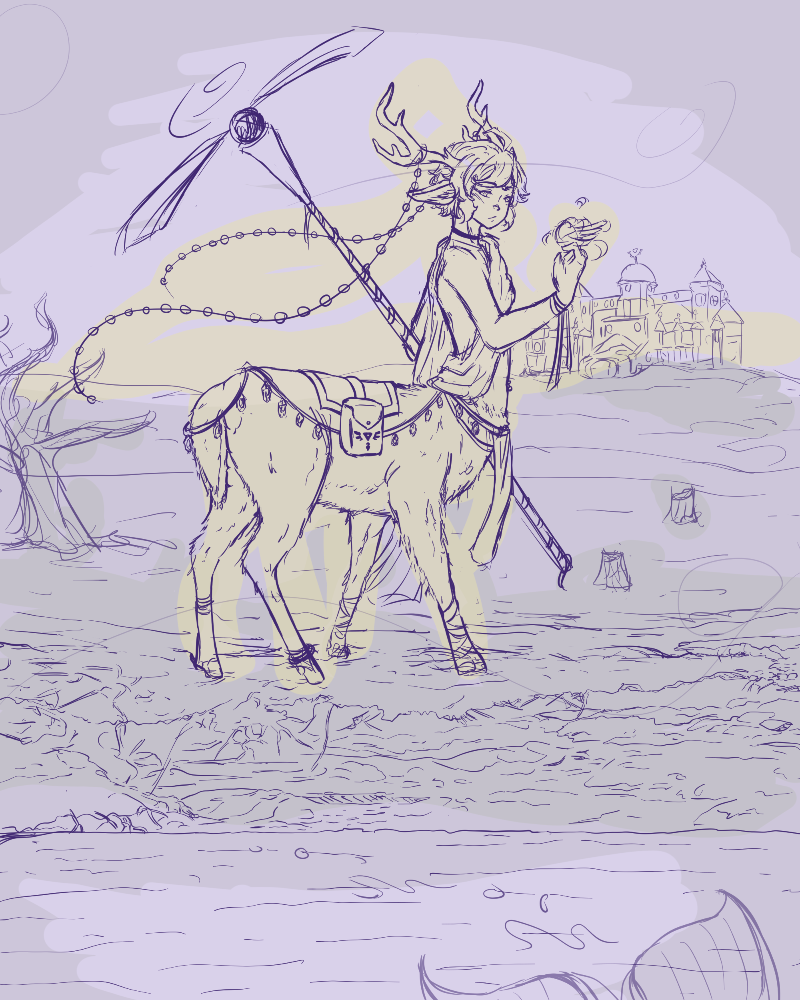

I've been practicing light and rendering lately, so for this piece I thought I would create a mood with sunset. The character is Ravio, who is one of my favorite characters from the Legend of Zelda - though he's not usually a cervitaur. I'm currently challenging myself to draw many of the Legend of Zelda characters as mythical creatures, and this is one of those pieces.
